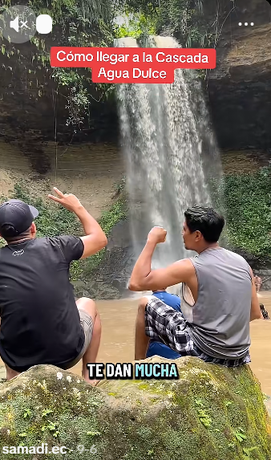

🗺️ CONTEXTO TERRITORIAL
PROYECTO MULTIDISCIPLINARIO UNESUM-REZ-2026-JIPIJAPA-001
Zona Sur de Manabí — Área Piloto 50.47 ha — 22 puntos UTM
Liderado por: Administración de Empresas — Ingeniería Civil UNESUM
TERRITORIO PILOTO: AGUA DULCE📊 MÉTRICAS DEL ÁREA PILOTO
El área piloto del proyecto multidisciplinario comprende 50.47 hectáreas en la Zona Sur de Manabí, delimitadas por 22 puntos de control UTM.
🗺️ MAPAS INTERACTIVOS
📍 MAPA 1 — ÁREA DEL PROYECTO (UTM 17S)
🔴 MAPA 2 — FALLAS DE CEDEÑO (2024)
Fuente: Cedeño Figueroa (2024) | Sistema: UTM Zona 17S — WGS84 | Elaboración: Ing. Gery Lorenzo Marcillo Merino, Msc.
🔴 FALLAS GEOLÓGICAS IDENTIFICADAS
Según el estudio de Cedeño Figueroa (2024), en el área piloto se identifican 3 fallas geológicas probables.
Impacto: Alto | Atraviesa el área de NO a E
Impacto: Alto | Atraviesa el área de O a SE
Impacto: Medio | Atraviesa el área central a E
🏫 CENTROS ACADÉMICOS DEL CANTÓN JIPIJAPA
El proyecto articula 61 centros académicos del Distrito 13D03, distribuidos en 12 parroquias.
⭐ Territorio Piloto: Agua Dulce (AGUA-001)
Centro: Escuela Presidente Urbina (AMIE 13H04567)
Parroquia: La América | Estudiantes: 9 | Docentes: 1
Problemática: Riesgo de cierre por falta de infraestructura adecuada.
💧 RECURSOS HÍDRICOS Y TRASVASE DEL RÍO DAULE
La Zona Sur de Manabí enfrenta una crisis hídrica estructural. El Plan Hidráulico del Sur de Manabí propone el trasvase del río Daule.
Nueva Alternativa: Acueducto Daule → Paján → Sancán
| Tramo | Ruta | Longitud (km) | Tipo |
|---|---|---|---|
| T1 | Salida Daule → Colimes | 79.26 | Gravedad |
| T2 | Colimes → Paján | 46.26 | Impulsión (FLYGT) |
| T3 | Paján → El Páramo | 13.91 | Impulsión (FLYGT) |
| T4 | El Páramo → Julcuy | 10.44 | Gravedad |
| T5 | Julcuy → Jipijapa | 14.91 | Gravedad |
🎥 RECURSO TURÍSTICO: LA CASCADA AGUA DULCE
La Cascada Agua Dulce es el principal atractivo turístico del recinto. Representa una oportunidad de desarrollo económico comunitario.

💧 La Cascada Agua Dulce
La cascada en todo su esplendor. Un recurso natural que la comunidad quiere compartir con el mundo.
📍 Reflexión: La Cascada como Recurso y Desafío
Recurso: La cascada es un atractivo turístico que puede generar ingresos para la comunidad.
Desafío: La falta de señalización limita el acceso y la experiencia turística.
Lección de honestidad: La UNESUM no puede prometer un paraíso turístico si no se invierte en infraestructura.
EL CONOCIMIENTO TRANSFORMA — PROYECTO DE FORMACIÓN MODULAR
Estructura I / Estructura II — Carrera de Ingeniería Civil — UNESUM — PI 2026
Docente responsable: Ing. Gery Lorenzo Marcillo Merino
"La honestidad refresca el pensamiento académico porque lo obliga a mirar el territorio."